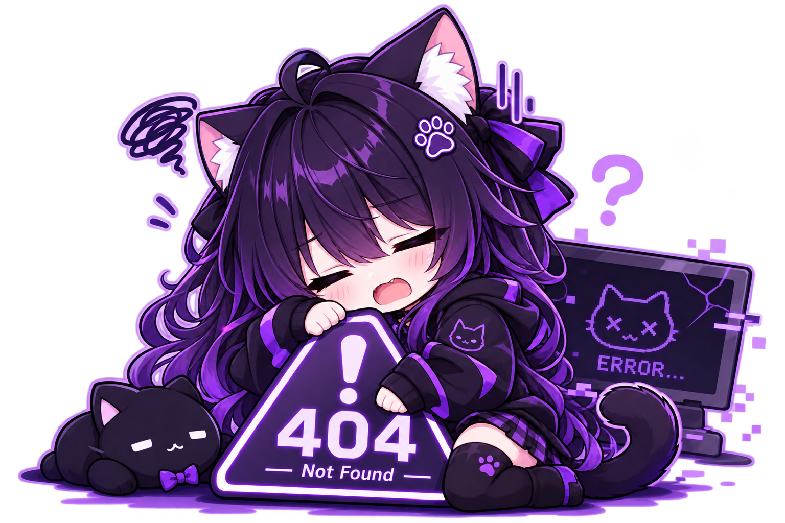

Oops!
Terjadi Kesalahan
Maaf, halaman yang kamu cari tidak dapat dimuat. Mungkin terjadi kesalahan pada server, atau koneksi internet kamu.
Saran:
Periksa koneksi internet kamu, atau coba lagi beberapa saat nanti.